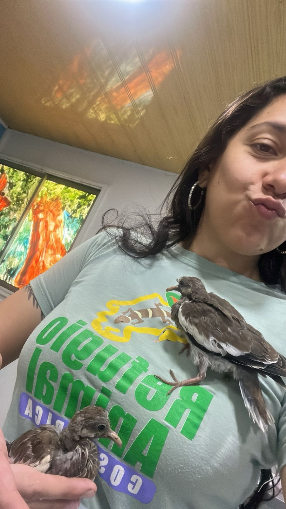
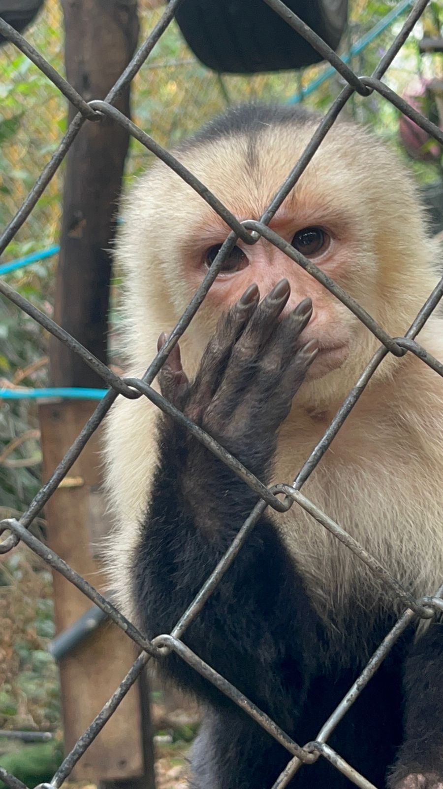

Protecting tropical biodiversity through hands-on rescue, specialized clinical rehabilitation, and community education in Costa Rica.
Working directly in Costa Rica's rich biodiverse ecosystems, my focus is on wild fauna triage, dietary management, species socialization, and sanctuary care for rescued animals.
From hand-rearing orphan birds to designing cognitive enrichment programs for primates, my work bridges wildlife rescue with long-term ecosystem conservation and public awareness.
Triage assessment, species-specific dietary formulation, hand-rearing juveniles, and habitat acclimation.
Designing cognitive puzzle feeders, structural sanctuary enhancements, and monitoring social dynamics in primates and birds.
Educating sanctuary visitors and local communities on coexisting with native wildlife and preventing human-wildlife conflict.
Hands-on rescue, species rehabilitation, and enrichment monitoring. (Click images to view full size)
Handling and health assessment for rescued Red-lored Amazon parrots during sanctuary integration.

Specialized protocol feeding and health monitoring for rescued juvenile birds.

Daily behavioral observation and welfare monitoring inside habitat enclosures.
Monitoring natural foraging instincts and food puzzle resolution in white-faced capuchins.
Refugio Animal Costa Rica
Direct animal management, emergency intake care, dietary execution, and behavioral enrichment for wild species including psittacines, primates, and small mammals.
Open to research partnerships, rehabilitation roles, and conservation projects.